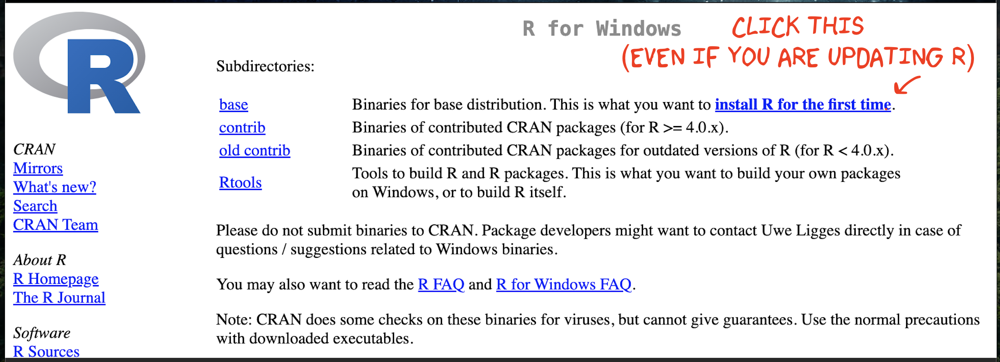
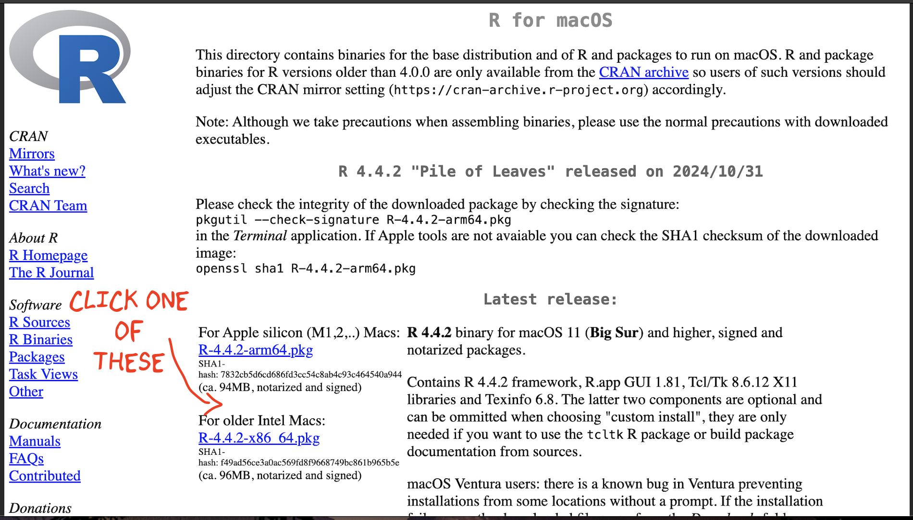
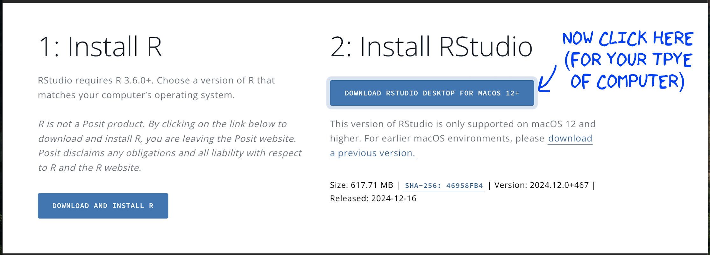
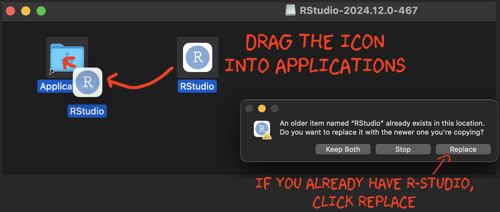

Installing R and R-Studio
Greatrex
2025-08-25
1 What versions should I be using?
What version of R and R studio should you be using?
- R: R version 4.5.1 (2025-06-13) – “Great Square Root”
- R-Studio: “Mariposa Orchid”
To update R and R studio, it’s easiest to just reinstall. You will not lose your work! It just updates the underlying software
2 How to Install R
STEP 1
Go to https://posit.co/download/rstudio-desktop/#download.
Scroll down and you should see something like this.

STEP 2
Now click on DOWNLOAD AND INSTALL
R. It will take you to a scary looking website called Cran R.
Click
the “INSTALL R” for your computer type.
STEP 3
The setup looks a little different
depending on whether you are on a Windows Machine or a Mac:
2.0.1 WINDOWS people

Click “Installing R for the first time”, EVEN IF YOU ARE UPDATING R-STUDIO
This will download a file. Double click to install. You do not need a shortcut on your desktop (because we will use R studio to access it)
2.0.2 MAC people

There are two potential options for you to download - only one will work, so it’s easy to try both if you’re not sure.
If your Mac is pretty new, try the top option.
If your Mac is more than a few years old, try the second option.
This will download a file. Double click to install. If it doesn’t work, try downloading the other one.
It might say that you cannot open the file because of safety concerns. If that’s the case, click the magnifying-glass on the top right of your screen, search for settings, click on the security tab and click that it’s OK to open it. Then try again.
3 How to install R-Studio
STEP 4
Go back to https://posit.co/download/rstudio-desktop/#download.
Now click the other button. It should automatically download a file
onto your computer

IF YOU ARE USING WINDOWS: Double click and install as normal.
IF YOU ARE USING A MAC, double click, then drag the icon into applications.
Nothing should happen!If you already have R-studio, replace the current one.
(If you have an old mac this might be where it breaks, let Dr G know)

4 Welcome to R
Now everything is installed, open R-studio (NOT R!). Or open a new workspace in Posit-Cloud

You will be greeted by three panels:
- The interactive R console (entire left)
- Environment/History (tabbed in upper right)
- Files/Plots/Packages/Help/Viewer (tabbed in lower right)

If you wish to learn more about what these windows do, have a look at
this resource, from the Pirates Guide to R: https://bookdown.org/ndphillips/YaRrr/the-four-rstudio-windows.html.
If you have used R before, you might see that there are variables and plots etc already loaded**. It is always good to clear these before you start a new analysis. To do this, click the little broom symbol in your environment tab